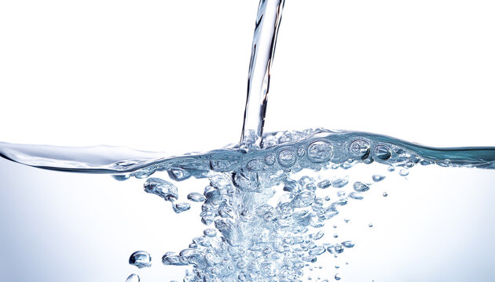
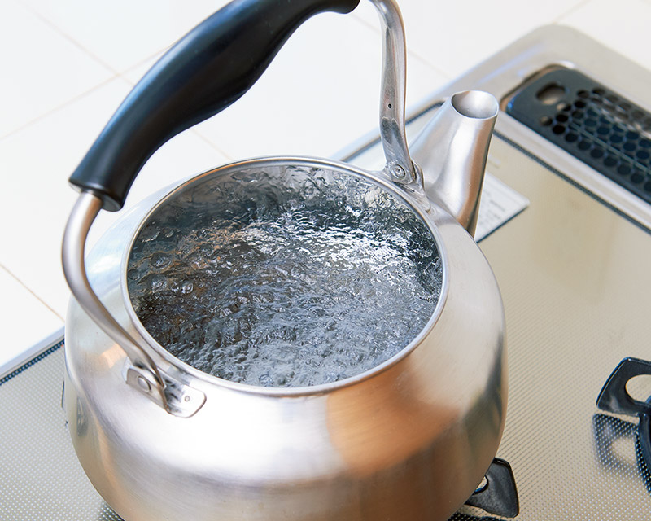
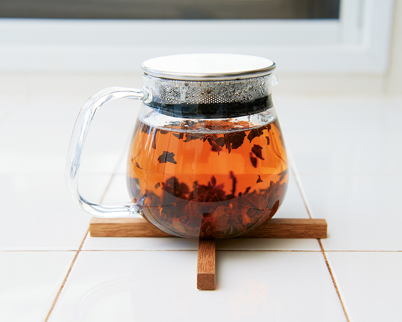
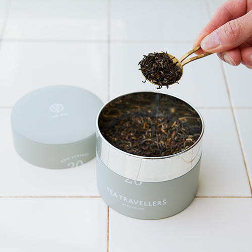
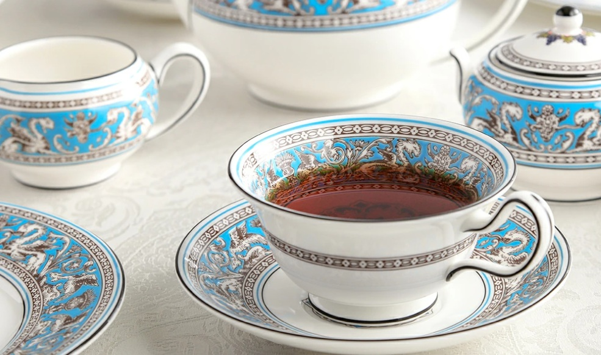

- トップ >
- 紅茶を楽しむポイント
紅茶を楽しむポイント
紅茶を飲む際に重要なポイントをまとめています。
水の硬度

紅茶の味を左右する最も重要なポイントのひとつです。水には「軟水」と「硬水」があり、日本の水道水は基本的に軟水です。軟水は紅茶の成分を引き出しやすく、香りがよく透明感のある味になります。一方、硬水はミネラルが多く、渋みが出やすく、味が重たくなる傾向があります。紅茶をおいしく淹れるには、軟水を使うのがおすすめです。
沸騰と温度

紅茶はしっかり沸騰したお湯で淹れることが非常に重要です。お湯がぬるいと茶葉が十分に開かず、香りも味も弱くなります。ポイントは、水は一度しっかり沸騰（ボコボコ状態）させる沸かし直しではなく、できるだけ新鮮な水で一回で沸かす。そうすると熱々のお湯が、紅茶の香りを最大限に引き出します。
抽出時間

紅茶の抽出時間は「茶葉の種類」だけでなく、どのように飲むか（用途）によって調整することが重要です。基本的に濃くしたい時は長め、軽くしたい時は短めにします。特にアイスティーでは、「急冷（クリアな透明感）」を保つためにも、しっかりした抽出が必要です。
茶葉の種類

紅茶の味わいは茶葉によって大きく変わるため、非常に重要です。アールグレイは爽やかな香りが特徴で、リラックスタイムに最適です。ダージリンは繊細で華やかな香りがあり、「紅茶のシャンパン」とも呼ばれます。アッサムはコクが強くミルクティーに向いています。自分の好みやシーンに合わせて茶葉を選びましょう。
ティーウェア

紅茶をより楽しむためには道具も重要です。ティーポットは茶葉がしっかり開く形状のものを選びましょう。カップは薄手のものだと口当たりがよく、香りも感じやすくなります。お気に入りのカップを使うと、ティータイムの満足度がぐっと高まります。